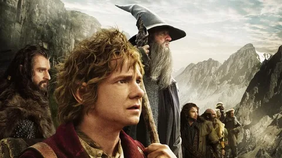

О книге
«Хоббит, или Туда и обратно» — повесть Дж. Р. Р. Толкина, рассказывающая о приключениях хоббита Бильбо Бэггинса.

«В норе под землёй жил-был хоббит…»
Основные персонажи
- Бильбо Бэггинс — хоббит, который не планировал приключений.
- Гэндальф — маг, который умеет “случайно” менять судьбы.
- Торин Дубощит — гном, идущий за своим королевством.
| Персонаж | Раса | Роль | Предмет |
|---|---|---|---|
| Бильбо | Хоббит | Главный герой | Кольцо |
| Гэндальф | Майар | Маг | Посох |
| Торин | Гном | Предводитель | Оркрист |
Контакты
Ссылки трёх типов по заданию: